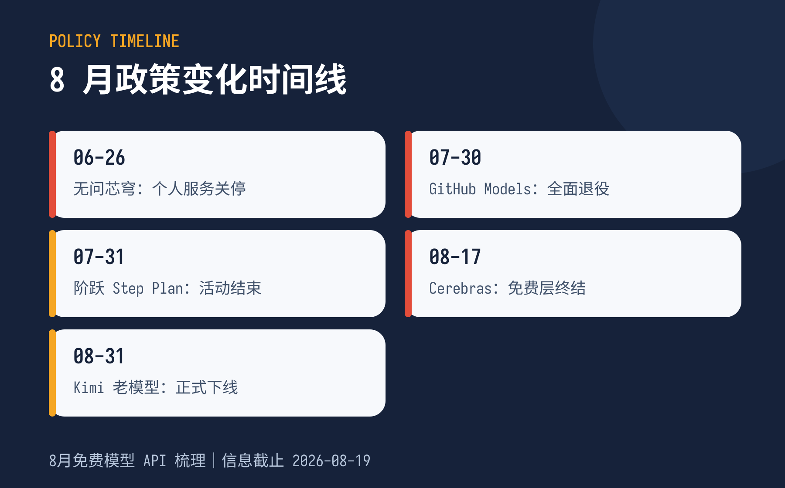
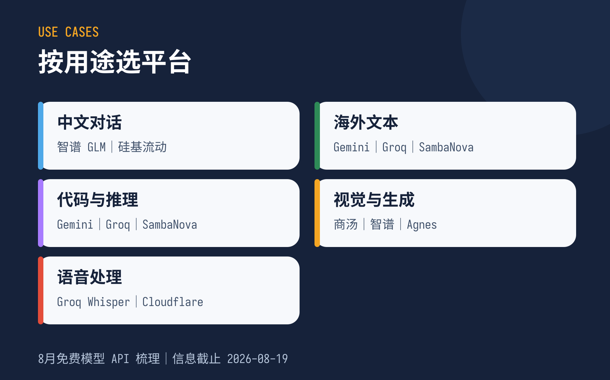
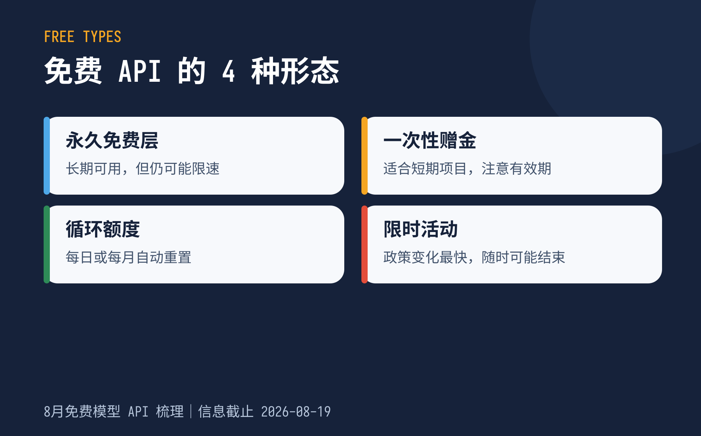

ISSUE 01 · 2026.08.24
8 月免费大模型 API 梳理
月抛生态的 8 月快照：29 个当前可测试，13 个需要核实，17 个暂不推荐。
POST-PUBLICATION UPDATE
发布后 5 天，又有这些变化
原始清单发布于 8 月 19 日。本节记录 8 月 24 日前发现的新渠道和待核实变化，不直接改写原始统计口径。
OpenRouter
stealth/ox-alpha8 月 20 日出现的匿名免费模型，社区信息称免费窗口约至 8 月 27 日。运营方和底层模型身份未明确。
只用无敏感内容测试国家超算互联网DeepSeek-V4-Flash 邀测
出现新邀测渠道，据称提供较大 Token 额度；可能需要申请或审核。
新增待核实渠道混元 Hy3限时免费至 8-31
WorkBuddy、CodeBuddy 或 TokenHub 出现相关限免入口，与原有混元共享资源包不是同一条额度。
确认入口与到期时间CHANGELOG
四项额度出现口径差异
| 平台 | 原清单 | 追更发现 | 当前处理 |
|---|---|---|---|
| 火山豆包 | 每模型 50 万 Token | 社区称部分模型可能达到 200 万 | 看控制台 |
| 硅基流动 | 新用户 14 元 | 有来源称实名后 16 元券 | 看账户到账 |
| 商汤 | 500 次/5 小时 | 有账号显示 150 次/5 小时 | 可能因账号不同 |
| NVIDIA NIM | 17 款 Free Endpoint | 有人称免费模型更多 | 按标记逐项确认 |
TIMELINE
8 月政策变化

QUICK PICKS
按用途快速选平台

FOUR TYPES
免费 API 的四种形态

CORE LIST
核心平台分组
永久免费层
Gemini · 智谱 GLM · Groq · Cloudflare Workers AI · SambaNova · Intern AI
注册赠金
阿里云百炼 · 火山豆包 · 腾讯混元 · 百度千帆 · 百川 · Kimi
聚合与中转
OpenRouter · ModelScope · Coze · Hugging Face · NVIDIA NIM
多模态能力
商汤 · Agnes · 智谱 CogView/CogVideo · Groq Whisper
SAFETY
接入前的四个提醒
- 免费政策会随地区、账号、实名状态和活动批次变化。
- 不要把密钥、客户资料、私有代码或未公开数据提交给匿名中转模型。
- 确认额度耗尽后是暂停、报错，还是进入付费计费。
- 免费层适合个人实验、原型和备用链路，不建议作为生产环境唯一依赖。
本期结论
核心推荐结构暂未改变：国内优先看智谱、硅基流动和百炼；海外优先看 Gemini、Groq 和 OpenRouter；新增渠道先做隔离测试，再决定是否纳入备用链路。
本文为 2026 年 8 月月刊快照。下期将记录 9 月新增、下线和额度变化。